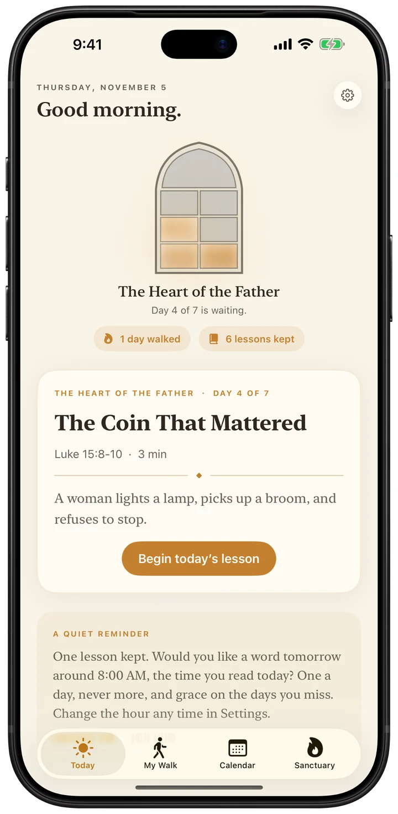
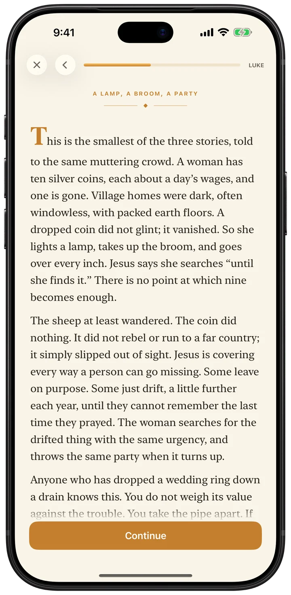
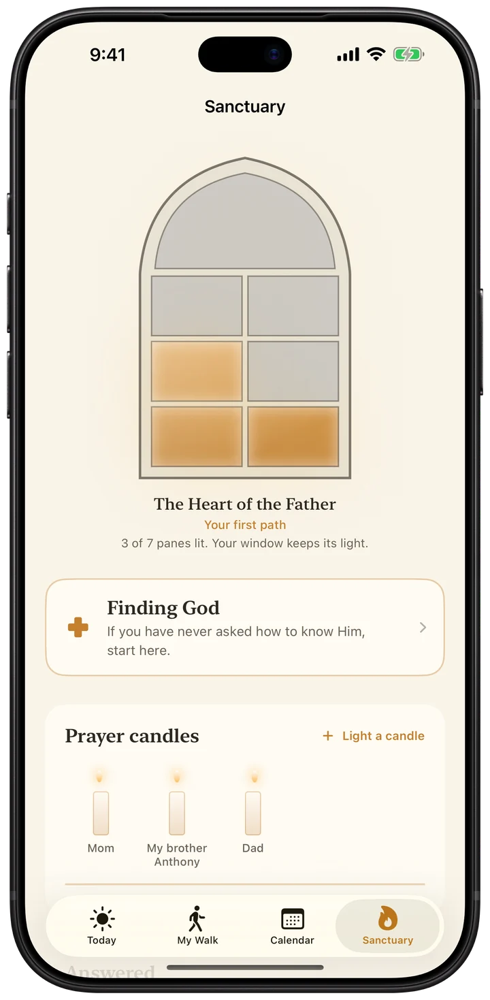
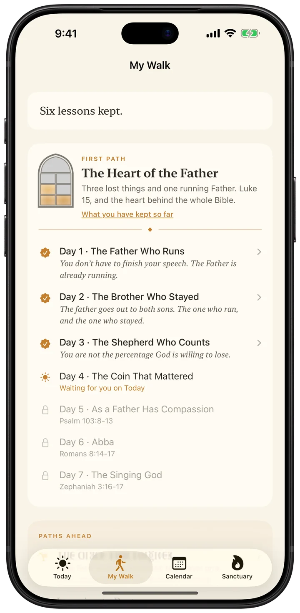

One short lesson a day: read the passage, then hear what it meant.
Every lesson is free. No account. No ads.

BibleKeep is an iPhone app of daily Bible lessons for beginners. Each day you read one short passage, then what it meant, in plain words.
It is for people new to the Bible, coming back to it, or who never had it explained. There are 22 paths of 7 lessons, 154 in all, written by one person and not generated. A lesson takes about five minutes. Scripture is from the Berean Standard Bible.
On iPhone Duo, open the phone and BibleKeep reads like a book. Every screen is set in fixed pages, two to a spread, turned with a page curl. Nothing scrolls. Fold it and it is the phone app again.

Read it, then hear what it meant
A plain-words teaching after every passage, the way a good pastor would.

Every lesson lights a pane
A window that keeps its light. Nothing ever goes dark.

Twenty-two paths, in your order
Seven lessons each. If you are new, three to walk first.
The details
Price
Every lesson is free. Plus is optional: $9.99 once (US price). No subscription.
Ads
None
Account
None. No sign-up, no server.
Privacy label
Data Not Collected
Works offline
Yes
Needs
An iPhone with iOS 17.0 or later. Optimized for iPhone Duo.
Size
8.8 MB
Languages
English
Category
Books
Age rating
4+
First released
August 6, 2026
Translation
Berean Standard Bible (public domain)
Not in it
AI chat, audio Bible, social features, streak penalties
Checked against the App Store listing on November 10, 2026.
Support
Found a bug, or want something added? Email me at minieriapps+biblekeep@gmail.com. I make BibleKeep on my own and read every message. Give me a couple of days to reply.
Privacy Policy
Last updated: July 26, 2026
BibleKeep is designed to be private by default. This policy explains what that means in plain language.
The short version
BibleKeep does not collect, transmit, sell, or share any of your data. Everything you do in the app (the lessons you complete, the prayers you keep, the check-ins you make) is stored only on your iPhone. There is no account, no login, and no server. The app does not connect to the internet to send your information anywhere.
What we collect
Nothing. BibleKeep has no analytics, no advertising, no trackers, and no third-party SDKs. We have no servers and no way to see your data.
Your name
On first launch, BibleKeep asks for an optional first name so it can greet you. That name is stored only on your device, is used only for the greeting, and can be changed or removed in Settings at any time. It is never sent anywhere.
Prayer candles
The names you give your prayer candles are stored only on your device. They are your prayers, and they stay between you and God.
Where your data lives
All of your information is stored locally on your device using Apple's on-device storage. It is included in your device's normal encrypted backups (iCloud Backup or a local Finder backup) if you have those enabled. That is handled entirely by Apple under Apple's Privacy Policy, not by us.
Scripture
Scripture quotations are from the Berean Standard Bible, which is in the public domain. All lesson content ships inside the app; nothing is downloaded and no reading activity is reported to anyone.
Children's privacy
BibleKeep does not collect any data from anyone, including children.
Changes to this policy
If this policy ever changes, the updated version will be posted here with a new "Last updated" date.